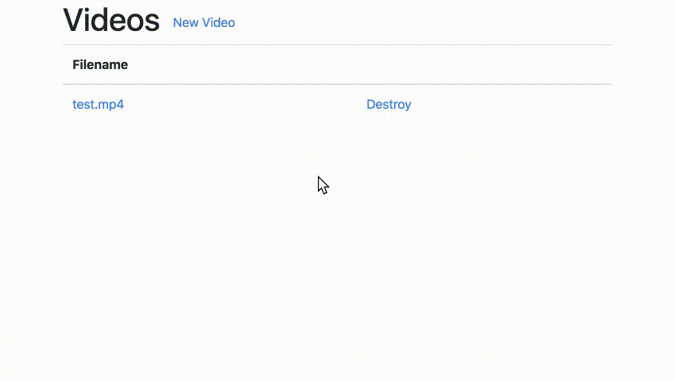

The server side code must to be runnable on either MacOS or Linux environment.
The client side should be developed with HTML base, and should work at least in Google Chrome or Firefox.
For Problem 1-3: It is not allowed to rely on external web services in the Internet.
For Problem 1-3: Feel free to use any library and database you want. Note that you need to specify how to set up the environment in the submitted documentation.
Please use any of the following programming languages:
Do not share or discuss any details of this coding task with anyone.
Please tackle the task by yourself. Do not share or discuss this coding task with anyone including other applicants. If we find an evidence of leakage, the applicant will be disqualified. If one applicant allows another applicant to copy the answer, both applicants will be disqualified.
We expect you to spend up to two days for this task. You can submit your work without solving all of the problems. Please do your best without neglecting your coursework.
It is desirable that your submission satisfies the following. (These are not mandatory. Your submission does not need to satisfy all of them if you are too busy.)
You will have a demonstration and code reviews in the interview, so please prepare for them.
In this task, you are asked to develop a prototype of a web service for annotating seminar presentation videos together with their audio contents (metadata). Do not use any external cloud services.
The application can have any kind of UI as long as it satisfies the given requirements. For the rest of undefined behavior, specifications, or UI, please make a resonable choice to maximize the UX yourself.
Please create a prototype of a web service where users can upload, view, and delete video files on the server side.

It is not necessary to make a completely identical UI as the above example, as long as the requirements are satisfied.
You are also encouraged to add improvements for better UX such as uploading by drag-and-drop, or a progress bar to show uploading status.
On the prototype web service you implemented in Problem 1, please add a feature for annotating the uploaded video with a description of the audio contents such as spoken texts.
It is not necessary to make a completely same UI as the above example, as long as the requirements are satisfied.
[
{
"start_time": 1.11, // Elapsed seconds (in float)
"finish_time": 1.23, // Elapsed seconds (in float)
"category": "pause", // Either one of speech, pause, or noise
"content": "Ah", // Spoken text
},
{
"start_time": 1.23,
"finish_time": 3.98,
"category": "speech",
"content": "Let's get started.",
},
{
"start_time": 3.87,
"finish_time": 4.32,
"category": "noise",
"content": "(Applause)",
}
: // Repeat
]You are also encouraged to add improvements for better UX such as using SPA (Single Page Application), also for the video upload feature in Problem 1.
Let's assume that the UX of the annotation features you implemented in Problem 1 and 2 is still not sufficient.
There can be additional improvements such as:
Your choice for improvement can be (but is not limited to) the ones listed above. Please implement at least one improvement for better UX, and explain the benefit of the improvements in the document.
(This is the end of instruction)